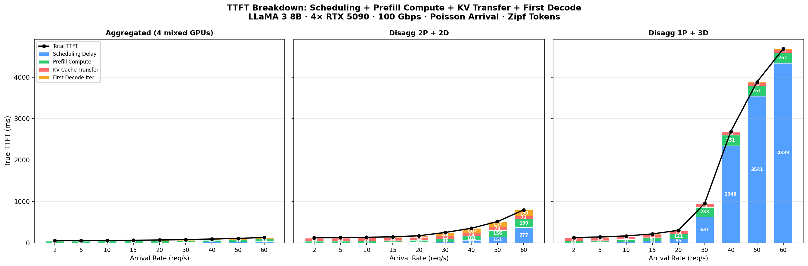
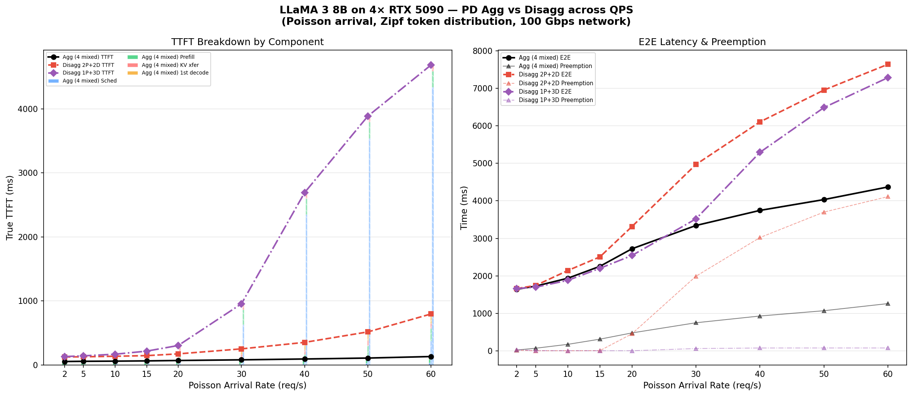

GPU profiling, RandomForest training, PD disaggregation simulation, and NS-3 KV cache transfer integration — from profiling to production-trace evaluation.
RTX 5090 · LLaMA 3 8B · Azure Trace · NS-3Goal: Evaluate LLaMA 3 8B inference performance on RTX 5090 using the full SimAI stack — from kernel-level GPU profiling through NS-3 packet-level network simulation. This is the first end-to-end SimAI experiment on a consumer GPU (RTX 5090, 32GB GDDR7).
| Component | Configuration |
|---|---|
| Model | LLaMA 3 8B (32 layers, GQA 32q/8kv, hidden=4096, MLP=14336) |
| GPU | NVIDIA RTX 5090 (32GB GDDR7, SM 12.0, PyTorch 2.10, CUDA 12.8) |
| Parallelism | TP=1, PP=1 (single GPU per replica) |
| Cluster | 4 GPUs, 100 Gbps inter-GPU network |
| Trace | Azure LLM Inference Trace (conversation, 19,366 requests, first 500 used) |
| Scheduler | vLLM (aggregated) / SplitWise (disaggregated) |
We wrote a standalone profiling script (profile_llama3_8b.py) that benchmarks each LLaMA 3 8B operation using CUDA events. This bypasses Vidur's sarathi-dependent profiling pipeline, which doesn't support SM 12.0 (Blackwell).
# MLP profiling (21 seconds, 259 data points)
python3 profile_llama3_8b.py --mode mlp --max_tokens 4096 \
--output_dir data/profiling/compute/rtx5090/meta-llama/Meta-Llama-3-8B
# Attention profiling (47 seconds, 6872 data points)
python3 profile_llama3_8b.py --mode attention --max_tokens 4096 --max_batch_size 128 \
--output_dir data/profiling/compute/rtx5090/meta-llama/Meta-Llama-3-8BOutput CSVs placed at data/profiling/compute/rtx5090/meta-llama/Meta-Llama-3-8B/{mlp,attention}.csv.
| Dataset | Rows | Time | Description |
|---|---|---|---|
mlp.csv | 259 | 21s | 9 ops × 259 token counts (1–4096) |
attention.csv | 6,872 | 47s | 5,600 prefill + 1,272 decode combos |
| Operation | PyTorch | at 1 token (ms) |
|---|---|---|
| mlp_up_proj | nn.Linear(4096, 28672) | 0.148 |
| mlp_down_proj | nn.Linear(14336, 4096) | 0.086 |
| attn_pre_proj | nn.Linear(4096, 6144) | 0.041 |
| attn_post_proj | nn.Linear(4096, 4096) | 0.031 |
| mlp_act | SiLU × gate (SwiGLU) | 0.012 |
| input_layernorm | nn.RMSNorm(4096) | 0.010 |
| attn_kv_cache_save | K,V copy to cache | 0.014 |
Trained 11 RandomForest models using GridSearchCV (n_estimators=[250,500,750], max_depth=[8,16,32], min_samples_split=[2,5,10]).
# Train all 11 RF models
python3 train_rf_predictor.py --train \
--mlp_csv data/profiling/compute/rtx5090/meta-llama/Meta-Llama-3-8B/mlp.csv \
--attention_csv data/profiling/compute/rtx5090/meta-llama/Meta-Llama-3-8B/attention.csv \
--output_dir trained_models/rtx5090
# Query execution time for 512 prefill tokens
python3 train_rf_predictor.py --query --num_tokens 512 --output_dir trained_models/rtx5090
# Sweep all token counts
python3 train_rf_predictor.py --sweep --output_dir trained_models/rtx5090| Model | MAPE (CV) | MAPE (actual) | Features |
|---|---|---|---|
| attn_kv_cache_save | 2.5% | <1% | num_tokens |
| input_layernorm | 3.3% | <1% | num_tokens |
| add | 3.9% | <1% | num_tokens |
| mlp_act | 11.1% | <1% | num_tokens |
| attn_prefill | 12.6% | 0.3% | kv_cache_size, chunk² |
| mlp_up_proj | 14.2% | <1% | num_tokens |
| attn_decode | 26.6% | 1.2% | batch_size, kv_cache |
The profiled execution times match the roofline model described by Sarathi-Serve (OSDI'24, Figure 6).
| Tokens | Per-Layer (ms) | 32-Layer (ms) | Regime |
|---|---|---|---|
| 1 | 0.37 | 11.8 | Memory-bound |
| 8 | 0.36 | 11.6 | Memory-bound |
| 32 | 0.37 | 11.9 | Memory-bound |
| 64 | 0.39 | 12.5 | Memory-bound |
| 128 | 0.49 | 15.8 | Transition |
| 512 | 1.39 | 44.5 | Compute-bound |
| 1024 | 2.65 | 84.7 | Compute-bound |
| 4096 | 9.69 | 310.0 | Compute-bound |
Before running simulations, we registered RTX 5090 as a new device in Vidur:
| File Modified | Change |
|---|---|
vidur/types/device_sku_type.py | Added RTX5090 = 5 |
vidur/types/node_sku_type.py | Added RTX5090_SINGLE = 7 |
vidur/config/device_sku_config.py | Added RTX5090DeviceSKUConfig (fp16_tflops=209, total_memory_gb=32) |
vidur/config/node_sku_config.py | Added RTX5090SingleNodeSKUConfig (1 device per node) |
# 4-GPU Aggregated (vLLM + Round-Robin)
python3 -m vidur.main \
--replica_config_device rtx5090 \
--replica_config_network_device rtx5090_single \
--replica_config_model_name meta-llama/Meta-Llama-3-8B \
--replica_config_tensor_parallel_size 1 \
--replica_config_num_pipeline_stages 1 \
--cluster_config_num_replicas 4 \
--global_scheduler_config_type round_robin \
--replica_scheduler_config_type vllm \
--random_forrest_execution_time_predictor_config_backend vidur \
--length_generator_config_type trace \
--trace_request_length_generator_config_trace_file ./data/processed_traces/azure_conv_trace.csv \
--trace_request_length_generator_config_max_tokens 4096 \
--interval_generator_config_type trace \
--trace_request_interval_generator_config_trace_file ./data/processed_traces/azure_conv_trace.csv \
--trace_request_interval_generator_config_start_time "2023-11-16 18:15:00" \
--trace_request_interval_generator_config_end_time "2023-11-16 19:15:00" \
--synthetic_request_generator_config_num_requests 500
# 4-GPU PD Disaggregated (SplitWise, 2P+2D, 100Gbps)
python3 -m vidur.main \
--replica_config_device rtx5090 \
--replica_config_network_device rtx5090_single \
--replica_config_model_name meta-llama/Meta-Llama-3-8B \
--replica_config_tensor_parallel_size 1 \
--replica_config_num_pipeline_stages 1 \
--replica_config_pd_p2p_comm_bandwidth 100 \
--replica_config_pd_p2p_comm_dtype float16 \
--replica_config_pd_node_ratio 0.5 \
--cluster_config_num_replicas 4 \
--global_scheduler_config_type split_wise \
--replica_scheduler_config_type split_wise \
# ... same trace args as aboveWe ran the Azure conversation trace (500 requests, real arrival times) on 4 GPUs with two configurations:
| 4GPU Aggregated | 4GPU Disaggregated | |
|---|---|---|
| Scheduler | vLLM + Round-Robin | SplitWise (2P + 2D) |
| True TTFT mean | 146ms | 383ms |
| True TTFT p99 | 453ms | 1,158ms |
| E2E mean | 3.09s | 3.32s |
| E2E p99 | 8.61s | 9.42s |
| Preemption | 261ms | 9ms |
| Throughput | 5,549 tok/s | 5,541 tok/s |
True TTFT breakdown:
| Component | Aggregated | Disaggregated | Delta | % of gap |
|---|---|---|---|---|
| Scheduling delay | 16.1ms | 37.5ms | +21.4ms | 9% |
| Prefill compute | 132.9ms | 200.8ms | +68.0ms | 29% |
| KV transfer | 0ms | 167.7ms | +167.7ms | 71% |
| First decode iter | 13.4ms | 14.3ms | +0.9ms | <1% |
| True TTFT | 146ms | 383ms | +237ms | 100% |
KV transfer accounts for 71% of the TTFT gap. Mean 157 MB transfer at 100 Gbps = 167 ms. Unavoidable in disagg, zero in agg.
With 2P+2D, each prefill GPU handles ~1.9 req/s (2× the load). Prefill compute increases from 133ms to 201ms.
Prefill compute by token bucket:
| Tokens | Agg (ms) | Disagg (ms) | Slowdown |
|---|---|---|---|
| 0–256 | 52 | 119 | 2.3× |
| 257–512 | 79 | 152 | 1.9× |
| 513–1024 | 106 | 180 | 1.7× |
| 1025–2048 | 131 | 198 | 1.5× |
| 2049–4096 | 298 | 356 | 1.2× |
Disagg saves 252ms preemption but adds 236ms (KV transfer + queuing). Net improvement only 16ms, wiped out by TTFT penalty.
We swept Poisson arrival rate from 2 to 60 req/s with Zipf-distributed token lengths, comparing three configurations.

Blue = scheduling, Green = prefill compute, Red = KV transfer, Orange = first decode. Black line = total TTFT.

Left: TTFT stacked bars. Right: E2E (solid) and preemption (triangles).
| QPS | Agg (4 mixed) | Disagg 2P+2D | Disagg 1P+3D | |||
|---|---|---|---|---|---|---|
| TTFT | E2E | TTFT | E2E | TTFT | E2E | |
| 2 | 56ms | 1.6s | 127ms | 1.7s | 133ms | 1.7s |
| 10 | 61ms | 1.9s | 138ms | 2.1s | 170ms | 1.9s |
| 20 | 71ms | 2.7s | 175ms | 3.3s | 306ms | 2.5s |
| 30 | 82ms | 3.3s | 253ms | 5.0s | 957ms | 3.5s |
| 40 | 95ms | 3.7s | 354ms | 6.1s | 2,693ms | 5.3s |
| 60 | 133ms | 4.4s | 798ms | 7.6s | 4,684ms | 7.3s |
SimAI 1.5's Vidur computes PD KV cache transfer time as kv_size / bandwidth. We wired NS-3 into this path:
# Build SimAI_simulator (NS-3 + astra-sim)
# Requires: GCC 9.4+ (GCC 13 needs CXXFLAGS="-include cstdint")
# Requires: sudo mkdir -p /etc/astra-sim/simulation && sudo chmod 777 /etc/astra-sim/simulation
cd ~/CS8803_DNS/SimAI
CXXFLAGS="-include cstdint" bash scripts/build.sh -c ns3
# Generate 2-GPU topology (100 Gbps, for P2P KV transfer)
python3 astra-sim-alibabacloud/inputs/topo/gen_Topo_Template.py \
-topo DCN+ -g 2 -gps 2 -gt RTX5090 -bw 100Gbps -nvbw 100GbpsKV cache transfer is unidirectional. We use REDUCESCATTER with 2×kv_size on 2 GPUs to model single-direction transfer:
# Example: simulate 128 MB KV cache transfer (unidirectional)
# Use REDUCESCATTER with 2x size: each node sends exactly 128 MB
cat > /tmp/kv_wl.txt << WL
HYBRID_TRANSFORMER_FWD_IN_BCKWD model_parallel_NPU_group: 2 ep: 1 pp: 1 vpp: 1 ga: 1 all_gpus: 2 checkpoints: 0 checkpoint_initiates: 0
1
kv_xfer -1 1 REDUCESCATTER 268435456 1 NONE 0 1 NONE 0 1
WL
# ↑ 268435456 = 2 × 134217728 (2× kv_size for unidirectional P2P)
AS_SEND_LAT=6 AS_NVLS_ENABLE=0 ./bin/SimAI_simulator -t 2 \
-w /tmp/kv_wl.txt \
-n ./DCN+SingleToR_2g_2gps_100Gbps_RTX5090 \
-c ./astra-sim-alibabacloud/inputs/config/SimAI.conf
# Result: 10863.6 µs = 10.86 ms (vs simple 10737.4 µs = +1.2%)
# Automated: build_ns3_kv_lookup.py sweeps 11 sizes (1-512 MB)
# Output: vidur-alibabacloud/ns3_kv_transfer_lookup.json
python3 build_ns3_kv_lookup.py| File | Change |
|---|---|
vidur/events/batch_end_event.py |
Added _ns3_kv_transfer_time(). Replaced size / bandwidth with NS-3 lookup. |
ns3_kv_transfer_lookup.json |
New file: 11 entries mapping KV bytes → NS-3 latency (µs). |
# Original code (vidur/events/batch_end_event.py:136):
request.pd_p2p_comm_time = request.pd_p2p_comm_size / request.pd_p2p_comm_bandwidth
# Patched code:
ns3_t = _ns3_kv_transfer_time(request.pd_p2p_comm_size)
if ns3_t is not None:
request.pd_p2p_comm_time = ns3_t
else:
request.pd_p2p_comm_time = request.pd_p2p_comm_size / request.pd_p2p_comm_bandwidth| KV Size | Simple (ms) | NS-3 (ms) | Overhead |
|---|---|---|---|
| 1 MB | 0.08 | 0.09 | +9.3% |
| 16 MB | 1.34 | 1.36 | +1.6% |
| 64 MB | 5.37 | 5.44 | +1.2% |
| 128 MB | 10.74 | 10.86 | +1.2% |
| 256 MB | 21.47 | 21.72 | +1.1% |
| 512 MB | 42.95 | 43.43 | +1.1% |
Azure conversation trace, 500 requests, real arrival times, 4 GPUs, 100 Gbps network.
| Aggregated | Disagg (Simple) | Disagg (NS-3) | |
|---|---|---|---|
| True TTFT mean | 146ms | 383ms | 397ms |
| True TTFT p99 | 453ms | 1,158ms | 1,205ms |
| E2E mean | 3.09s | 3.32s | 3.32s |
| E2E p99 | 8.61s | 9.42s | 9.42s |
| Preemption | 261ms | 9ms | 9ms |
| KV transfer mean | N/A | 168ms | 182ms (+8.6%) |
| KV transfer p99 | N/A | 555ms | 603ms (+8.6%) |
| Throughput | 5,549 tok/s | 5,541 tok/s | 5,542 tok/s |
Memory-bound flat region at 1–64 tokens, linear at 128+. Crossover earlier than A100.
At ~3.8 req/s on 4 GPUs, aggregation outperforms disaggregation on all latency metrics.
For single-flow unidirectional KV transfer, NS-3 shows ~1–9% overhead (1% for large, 9% for small).
NS-3 only covers TP AllReduce; PD P2P was hardcoded. GitHub issues #210, #259 confirm this gap. Our patch demonstrates the integration.